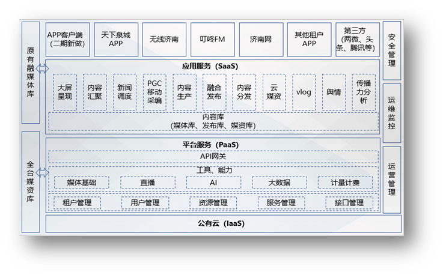

项目背景
融合媒体时代的到来，已经慢慢打破了传统电视台生产的固有流程，以新闻节目快速融合报道，专题综艺节目内容形式创新为方向的电视节目发展，趋势已经越来越清晰。结合云计算、大数据、5G、AI 人工智能等相关的互联网技术，为融合媒体的发展，提供了足够的技术支撑。
鹊华云媒体中台就是为了满足融合媒体的发展需求而进行设计的，按照广电专业化的业务发展需求，通过云平台的建设，推进加快媒体融合发展，努力促成传统媒体在资源组织方式、业务管理运营机制、媒体产品创新上更加开放多元和积极探索作为，既符合国家媒体融合发展战略，也符合广电主流媒体转型升级发展期待，同时也顺应时代和技术发展趋势。
解决方案
鹊华云媒体中台位于整个云平台的核心层，可以提供对 IaaS 层资源的统一管控调度，具备私有云和公有云同构能力，能够实现对于异构平台的统一管理；对于视、音频业务支撑及生产加工能力；还能够提供第三方生产工具集的快速注册和管理，并提供统一的标准化应用开发接口，为广大合作伙伴和开发者提供音视频生产加工、管理发布等服务能力。通过媒体中台提供的 API 接口，就可以访问从视频上传、生产加工、管理发布以及多终端展示等的全部功能服务，轻松实现音视频的应用开发。利用媒体中台还可以对所提供的服务进行精细化的运营管理，提供统一的计量、计费机制，实现服务的全面化运营。
鹊华云媒体中台，为了保障各项服务能够安全可靠的运行，制定了严格的运营管理机制和流程，充分利用云的优势和特点，设计了全新的平台技术架构，在数据的安全性，访问的高并发、高效率，大规模并行处理等等方面都做了深入的工作，以提供高效、安全、可靠的运行服务环境。集群环境运行、多点业务支撑、多数据备分等机制可以充分保证系统能够实现 7x24 小时运行。
